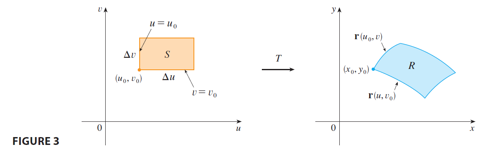
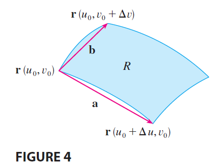
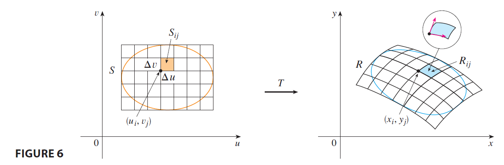
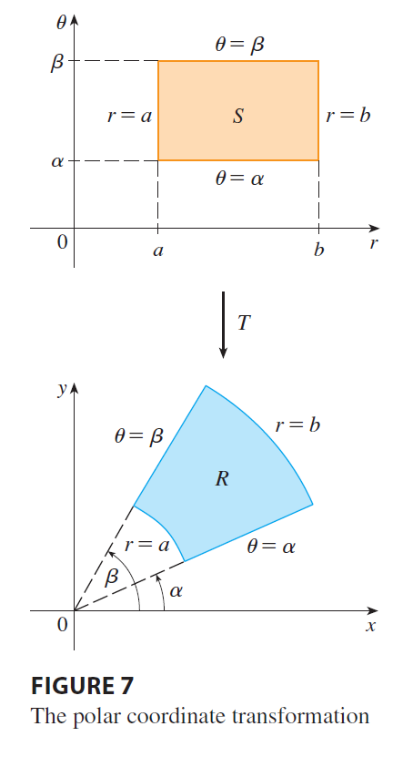

Now let’s see how a change of variables affects a double integral. We start with a small rectangle S in the uv-plane whose lower left corner is the point \((u_0, v_0)\) and whose dimensions are \(\Delta u\) and \(\Delta v\). (See Figure 3.)

The image of S is a region R in the xy-plane, one of whose boundary points is \((x_0, y_0) = T(u_0, v_0)\). The vector \[ \mathbf{r}(u, v) = g(u, v)\mathbf{i} + h(u, v)\mathbf{j} \] is the position vector of the image of the point \((u, v)\). The equation of the lower side of S is \(v=v_0\), whose image curve is given by the vector function \(\mathbf{r}(u, v_0)\). The tangent vector at \((x_0, y_0)\) to this image curve is \[ \mathbf{r}_u = g_u(u_0, v_0)\mathbf{i} + h_u(u_0, v_0)\mathbf{j} = \frac{\partial x}{\partial u}\mathbf{i} + \frac{\partial y}{\partial u}\mathbf{j} \] Similarly, the tangent vector at \((x_0, y_0)\) to the image curve of the left side of S (namely, \(u=u_0\)) is \[ \mathbf{r}_v = g_v(u_0, v_0)\mathbf{i} + h_v(u_0, v_0)\mathbf{j} = \frac{\partial x}{\partial v}\mathbf{i} + \frac{\partial y}{\partial v}\mathbf{j} \] We can approximate the image region \(R = T(S)\) by a parallelogram determined by the secant vectors \[ \mathbf{a} = \mathbf{r}(u_0+\Delta u, v_0) - \mathbf{r}(u_0, v_0) \qquad \mathbf{b} = \mathbf{r}(u_0, v_0+\Delta v) - \mathbf{r}(u_0, v_0) \] shown in Figure 4. But

\[ \mathbf{r}_u = \lim_{\Delta u \to 0} \frac{\mathbf{r}(u_0+\Delta u, v_0) - \mathbf{r}(u_0, v_0)}{\Delta u} \] and so \[ \mathbf{r}(u_0+\Delta u, v_0) - \mathbf{r}(u_0, v_0) \approx \Delta u \mathbf{r}_u \] Similarly \[ \mathbf{r}(u_0, v_0+\Delta v) - \mathbf{r}(u_0, v_0) \approx \Delta v \mathbf{r}_v \] This means that we can approximate R by a parallelogram determined by the vectors \(\Delta u \mathbf{r}_u\) and \(\Delta v \mathbf{r}_v\). (See Figure 5.)
Therefore we can approximate the area of R by the area of this parallelogram, which, from Section 12.4, is
\[ |(\Delta u \mathbf{r}_u) \times (\Delta v \mathbf{r}_v)| = |\mathbf{r}_u \times \mathbf{r}_v| \Delta u \Delta v \tag{6} \]
Computing the cross product, we obtain \[ \mathbf{r}_u \times \mathbf{r}_v = \begin{vmatrix} \mathbf{i} & \mathbf{j} & \mathbf{k} \\ \frac{\partial x}{\partial u} & \frac{\partial y}{\partial u} & 0 \\ \frac{\partial x}{\partial v} & \frac{\partial y}{\partial v} & 0 \end{vmatrix} = \begin{vmatrix} \frac{\partial x}{\partial u} & \frac{\partial y}{\partial u} \\ \frac{\partial x}{\partial v} & \frac{\partial y}{\partial v} \end{vmatrix} \mathbf{k} = \left( \frac{\partial x}{\partial u}\frac{\partial y}{\partial v} - \frac{\partial y}{\partial u}\frac{\partial x}{\partial v} \right) \mathbf{k} \] The determinant that arises in this calculation is called the Jacobian of the transformation and is given a special notation.
Definition 7 The Jacobian of the transformation T given by \(x=g(u, v)\) and \(y=h(u, v)\) is \[ \frac{\partial(x, y)}{\partial(u, v)} = \begin{vmatrix} \frac{\partial x}{\partial u} & \frac{\partial x}{\partial v} \\ \frac{\partial y}{\partial u} & \frac{\partial y}{\partial v} \end{vmatrix} = \frac{\partial x}{\partial u}\frac{\partial y}{\partial v} - \frac{\partial x}{\partial v}\frac{\partial y}{\partial u} \]
With this notation we can use Equation 6 to give an approximation to the area \(\Delta A\) of R:
\[ \Delta A \approx \left| \frac{\partial(x, y)}{\partial(u, v)} \right| \Delta u \Delta v \tag{8} \]
where the Jacobian is evaluated at \((u_0, v_0)\).
Next we divide a region S in the uv-plane into rectangles \(S_{ij}\) and call their images in the xy-plane \(R_{ij}\). (See Figure 6.)

Applying the approximation (8) to each \(R_{ij}\), we approximate the double integral of f over R as follows: \[ \iint_R f(x, y) dA \approx \sum_{i=1}^m \sum_{j=1}^n f(x_i, y_j) \Delta A_{ij} \] \[ \approx \sum_{i=1}^m \sum_{j=1}^n f(g(u_i, v_j), h(u_i, v_j)) \left| \frac{\partial(x, y)}{\partial(u, v)} \right| \Delta u \Delta v \] where the Jacobian is evaluated at \((u_i, v_j)\). Notice that this double sum is a Riemann sum for the integral \[ \iint_S f(g(u, v), h(u, v)) \left| \frac{\partial(x, y)}{\partial(u, v)} \right| du dv \] The foregoing argument suggests that the following theorem is true. (A full proof is given in books on advanced calculus.)
9 Change of Variables in a Double Integral Suppose that T is a \(C^1\) transformation whose Jacobian is nonzero and that T maps a region S in the uv-plane onto a region R in the xy-plane. Suppose that f is continuous on R and that R and S are type I or type II plane regions. Suppose also that T is one-to-one, except perhaps on the boundary of S. Then \[ \iint_R f(x, y) dA = \iint_S f(x(u, v), y(u, v)) \left| \frac{\partial(x, y)}{\partial(u, v)} \right| du dv \]
Theorem 9 says that we change from an integral in x and y to an integral in u and v by expressing x and y in terms of u and v and writing \[ dA = \left| \frac{\partial(x, y)}{\partial(u, v)} \right| du dv \] Notice the similarity between Theorem 9 and the one-dimensional formula in Equation 2. Instead of the derivative \(dx/du\), we have the absolute value of the Jacobian, that is, \(|\partial(x, y)/\partial(u, v)|\).
As a first illustration of Theorem 9, we show that the formula for integration in polar coordinates is just a special case. Here the transformation T from the \(r\theta\)-plane to the xy-plane is given by \[ x = g(r, \theta) = r\cos\theta \qquad y = h(r, \theta) = r\sin\theta \] and the geometry of the transformation is shown in Figure 7. T maps an ordinary rectangle in the \(r\theta\)-plane to a polar rectangle in the xy-plane. The Jacobian of T is \[ \frac{\partial(x, y)}{\partial(r, \theta)} = \begin{vmatrix} \frac{\partial x}{\partial r} & \frac{\partial x}{\partial \theta} \\ \frac{\partial y}{\partial r} & \frac{\partial y}{\partial \theta} \end{vmatrix} = \begin{vmatrix} \cos\theta & -r\sin\theta \\ \sin\theta & r\cos\theta \end{vmatrix} = r\cos^2\theta + r\sin^2\theta = r > 0 \]

Thus Theorem 9 gives \[ \iint_R f(x, y) dx dy = \iint_S f(r\cos\theta, r\sin\theta) \left| \frac{\partial(x, y)}{\partial(r, \theta)} \right| dr d\theta \] \[ = \int_\alpha^\beta \int_a^b f(r\cos\theta, r\sin\theta) r dr d\theta \] which is the same as Formula 15.3.2.
EXAMPLE 2 Use the change of variables \(x = u^2 - v^2, y = 2uv\) to evaluate the integral \(\iint_R y dA\), where R is the region bounded by the x-axis and the parabolas \(y^2 = 4-4x\) and \(y^2 = 4+4x, y \ge 0\).
EXAMPLE 3 Evaluate the integral \(\iint_R e^{(x+y)/(x-y)} dA\), where R is the trapezoidal region with vertices \((1, 0), (2, 0), (0, -2),\) and \((0, -1)\).